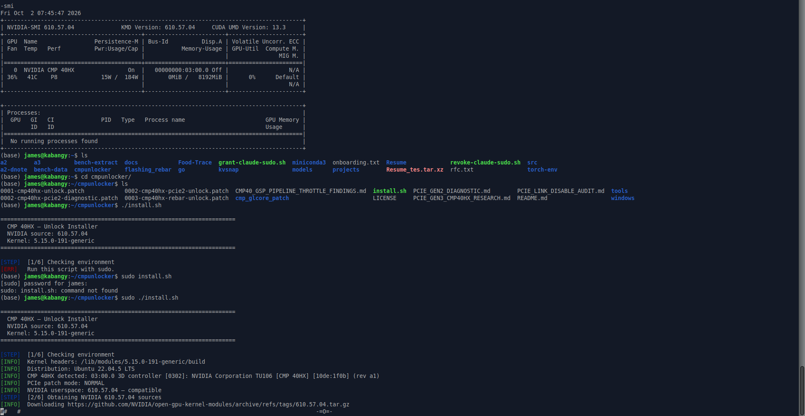
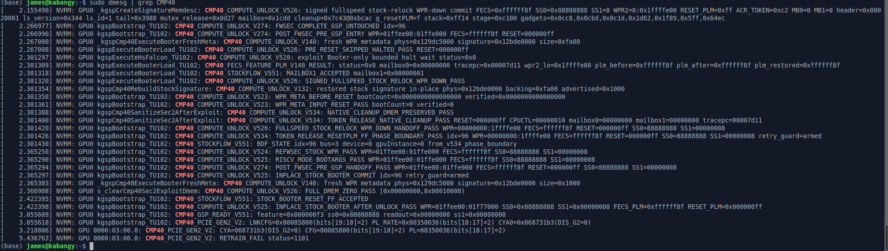
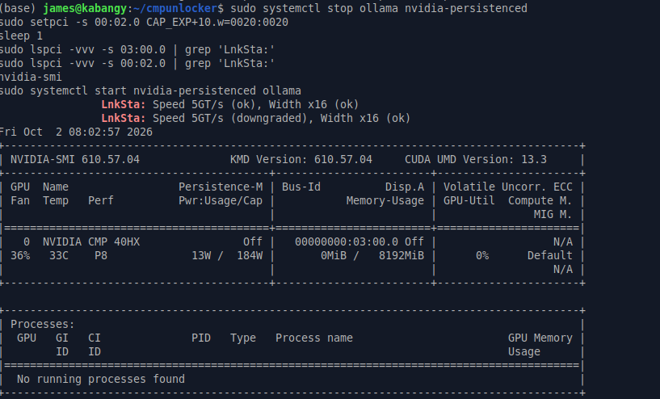

X99 build series: The build · mistral.rs vs llama.cpp · Four LLMs compared · Wake on LAN · ReBar BIOS mod · CMP 40HX unlock
The CMP 40HX ships locked to PCIe Gen1, a 64 MiB BAR1 and crippled FP16. The cmpunlocker patches to NVIDIA's open kernel driver lift all three without touching the VBIOS. Compute and ReBAR worked on the first boot. Gen2 didn't: the driver's link retrain failed on the X99 root port. A second retrain triggered by hand from the root port brought the link up at 5 GT/s. FP16 throughput went up 55×, prompt processing about 12×, token generation 2×, and host-to-GPU bandwidth doubled.
The CMP 40HX is a TU106 (the RTX 2060 Super / 2070 die) sold for mining, and NVIDIA limited it so it couldn't compete with gaming cards. The capacitor mod already got the card to x16, but the link still ran at Gen1 (2.5 GT/s, about 3.1 GB/s in practice). On top of that, FP16 cuBLAS ran at under 1 TFLOPS, which is the path Ollama uses for prompt processing.
cmpunlocker is a set of patches to NVIDIA's open-gpu-kernel-modules 610.57.04. It changes the GSP/SEC2 boot path to restore the SM configuration, opens the GSP PCIe policy for Gen2 and retrains the link, and enables the card's ReBAR capability. Nothing is written to the VBIOS. The unlock is reapplied every time the driver loads, so turning the machine off returns the card to stock.
| Item | Details |
|---|---|
| GPU | NVIDIA CMP 40HX (TU106, 10de:1f0b), 8 GB, VBIOS 90.06.67.00.04, x16 after the capacitor mod |
| Motherboard | Huananzhi X99-BD4, BIOS 5.11 with ReBarDxe inserted (ReBarState 32, unlimited), Above 4G Decoding on |
| CPU | Intel Xeon E5-2678 v3, card on root port 00:02.0 (PCIe 3.0 capable) |
| OS | Ubuntu 22.04.5, kernel 5.15.0-191, Secure Boot off, headless |
| Driver | Before: 580.178.04 server, closed kernel module. After: 610.57.04 open, patched by cmpunlocker |
sudo apt install nvidia-driver-610-open,
then held the packages so apt can't upgrade them out from under the patches.sudo ./install.sh. It downloads the 610.57.04 source, checks its SHA-256, applies the three patches, builds the
modules and installs them to /lib/modules/$(uname -r)/updates/cmpunlocker/.
One thing to check afterwards: the stock DKMS build of the same driver sits in updates/dkms/ right next to the patched
one. modinfo nvidia | grep filename should point at updates/cmpunlocker/, and on my machine it did.
After the cold boot, dmesg showed the compute unlock passing (SS0=0x88888888 SS1=0x00000008 FECS_PLM=0xffffff8f)
and nvidia-smi reported an 8192 MiB BAR1. The link was still at 2.5 GT/s, and the last line of the log explained why:
CMP40_PCIE_GEN2_V2: RETRAIN_FAIL status=1101
The project's diagnostic notes describe this exact failure on VBIOS .04, and fix it by unbinding and rebinding the driver. Its
Gen2 retrain was verified on an AMD root port, while an Intel Alder Lake test hit trouble, and I couldn't find any reports from X99.
The log also shows the driver had already set a Gen2 target (bits[19:18]=2) on both ends. The retrain itself had failed.
So instead of reloading the driver, I stopped everything using the GPU and asked the root port to retrain once more by setting the
Retrain Link bit in its Link Control register:
sudo systemctl stop ollama nvidia-persistenced
sudo setpci -s 00:02.0 CAP_EXP+10.w=0020
sudo lspci -vvv -s 03:00.0 | grep 'LnkSta:'
sudo systemctl start nvidia-persistenced ollama
This time the link trained at 5 GT/s x16 on both ends. The root port's "downgraded" just means it can do 8 GT/s and settled at the
card's 5. Loading a model and running the full benchmark set left the link at 5 GT/s throughout, and the compute unlock and 8 GiB BAR1 stayed in place.
dmesg showed no AER or Xid errors afterwards.

One caveat about that command: without a mask, setpci writes the whole 16-bit register, so it also cleared the port's other
Link Control bits, ASPM and Common Clock Configuration among them. The masked form
setpci -s 00:02.0 CAP_EXP+10.w=0020:0020 sets only the Retrain Link bit. I haven't tested whether the masked form
trains to Gen2 as well, since clearing those bits may be part of why it worked. Since the unlock resets on a power cycle, this
step has to run after every cold boot.
Same machine, same models, same scripts. Each number is the median of 3 to 5 runs. Load time is a cold load from Ollama with the model file already in the page cache, so it measures PCIe and setup rather than the disk.
| Test | Stock (580, Gen1) | Unlocked (610, Gen2) | Change |
|---|---|---|---|
| PCIe link | 2.5 GT/s x16 | 5 GT/s x16 | Gen2 |
| BAR1 | 64 MiB | 8192 MiB | 128× |
| Host to GPU, pinned | 3.14 GB/s | 6.25 GB/s | 2.0× |
| GPU to host, pinned | 3.35 GB/s | 6.69 GB/s | 2.0× |
| FP32 GEMM (4096³) | 7.14 TFLOPS | 8.03 TFLOPS | +12% |
| FP16 GEMM (4096³) | 0.98 TFLOPS | 54.37 TFLOPS | 55× |
| Qwen3 8B prompt (1.7k tokens) | 121 tok/s | 1,514 tok/s | 12.5× |
| Qwen3 8B generation | 30.6 tok/s | 62.0 tok/s | 2.0× |
| Gemma 4 E4B prompt (1.5k tokens) | 211 tok/s | 2,100 tok/s | 10× |
| Gemma 4 E4B generation | 37.7 tok/s | 60.0 tok/s | 1.6× |
| Qwen3 8B load (5.2 GB) | 4.97 s | 4.25 s | −14% |
| Gemma 4 E4B load | 7.75 s | 6.91 s | −11% |
FP16 at 54 TFLOPS is well above the project's own 11.42 cuBLAS figure. Mine is a 4096³ GEMM with FP32 accumulate, which cuBLAS runs on the Tensor Cores, and it lines up with the 63.8 TFLOPS Tensor Core result they report.
Bandwidth doubled exactly as Gen2 should, but load time improved only 11 to 14%. Loading Qwen3 8B averages about 1.2 GB/s, so most of those 4 to 5 seconds is Ollama starting its runner and setting up, not the copy. At Gen1 the 5.2 GB copy alone takes about 1.7 s, and halving it should save about 0.8 s. The measured saving was 0.7 s.
I didn't expect generation to double. Token generation is normally limited by memory bandwidth, and the memory clock didn't change (7001 MHz before and after). It seems the stock SM configuration was holding back decode as well as prefill.
Two caveats. I changed the driver (580 closed to 610 open) and applied the unlock in the same step, and didn't measure stock 610 in between. So the compute numbers belong to driver plus unlock together. The bandwidth and load-time gains come from the link and are clean. Also, the first Gemma prompt run after the model loaded came in at 75 tok/s, so I used the two runs after it.
Install the exact driver version first, and check with modinfo that the patched module is the one that loads. If
dmesg | grep CMP40 shows RETRAIN_FAIL status=1101 on an Intel board, try a second retrain from the root
port before reaching for the driver reprobe, because a retrain doesn't reset the GPU. And keep a way back: deleting
updates/cmpunlocker, running depmod -a and rebuilding the initramfs returns you to the stock 610 driver.
After a kernel update, rerun sudo ./install.sh --no-download, since DKMS rebuilds only the stock module.